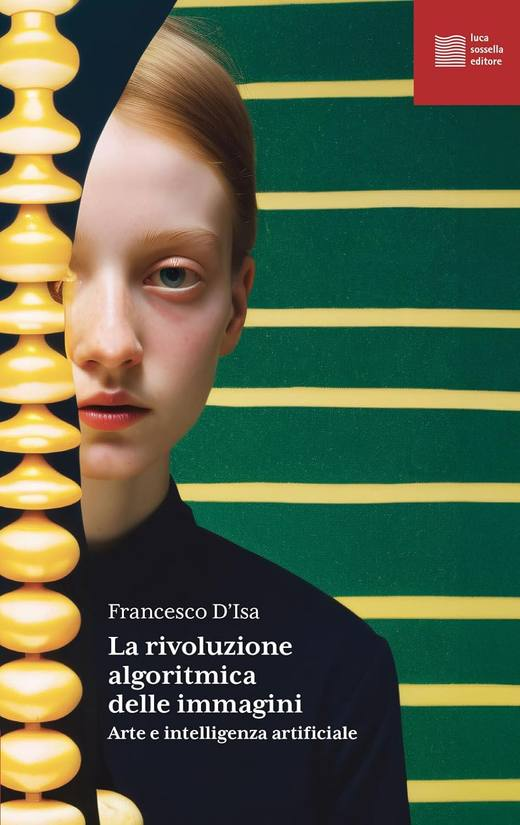

01 2024 · Luca Sossella
La rivoluzione algoritmica delle immagini
Saggio che interroga l’impatto delle IA generative sull’arte e sulla percezione, discutendo anche statuto autoriale, confini dell’espressione e questioni di proprietà intellettuale. 160 pagine; ISBN 9791259980601.
Buy →